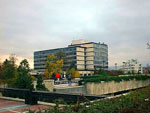
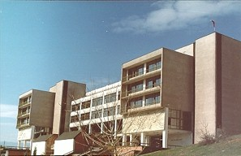

|
A B C D E F G H I |
|
|
Участници:
Участието в турнира е по покана от организаторите.
Програма:
26 март, петък - пристигане
и регистрация
18 часа - техническа конференция
27 март, събота
10 - 15 часа СЪСТЕЗАНИЕ
16 часа НАГРАЖДАВАНЕ НА ПОБЕДИТЕЛИТЕ
| НОВО ! ВАЖНО !
Задължително е всеки отбор да има треньор - учител, преподавател или студент. След регистриране на отбора, ще има среща на треньора с организаторите на състезанието. По изключение отборът може да е непълен, т.е. да се състои от двама души и със специално разрешение от организаторите - от 1 човек. |
Условията на задачите ще бъдат на български език.
Основни правила за това състезание:
1. Отборът се състои от 3-ма ученици.
2. На всеки отбор се осигурява един компютър с необходимия
софтуер.
3. Отборът може да използва всякаква печатна литература,
но не и дискети, CD-та и др. подобни.
4. Програмира се на Паскал, С или С++.
5. Състезанието трае 5 часа и се решават 5 задачи.
Вход и изход на програмите са текстови файлове по строго зададен формат.
6. Когато отборът реши, че е готов с дадена задача,
той веднага дава решението (EXE файл) на журито, което в рамките на 5 минути
проверява решението с тестови примери. Веднага се обявява публично (на
всички отбори) резултата от проверката. Той може да бъде:
- AC (accepted) вярно решение;
- TL (time limit) програмата работи много време,
вероятно неефективен алгоритъм;
- WA (wrong anser) грешно решение на някои от примерите
на журито;
- RT (run-time error) грешка по време на изпълнение;
- PE (presentation error) програмата дава решение
(еветуално вярно), но изходния файл не е по зададения формат.
7. Класирането на отборите става по брой решени
задачи и по времето на даване на вярното решение на журито. За всяко представено
невярно решение на някоя задача, на отбора се добавя наказателно време
от 20 минути, ако за тази задача по-късно е представено вярно решение.
8. По време на състезанието резултатите на отборите
се обявяват на всички. При завършване на състезанието се обявява окончателното
класиране на отборите.
Регламент за студентски състезание по програмиране
Работата на отбора на състезание по програмиране
Примерна задача: Суми от числа на Фибоначи
** условие на задачата (sfib.html)
** текст на програма - примерно решение на С++ (sfib.cpp)
** exe файл от Dev-C++ (sfib.exe)
** входен тестов файл на журито (sfib.inp)
** изходен тестов файр на журите (sfib.out)
- решение на примерите от тестовия файл
Краен срок 12 март 2004 г.
Форма за регистрация:
| Има на отбора:
Треньор: - трите имена, длъжност, адрес, телефеон, GSM, E-mail Представител на: [училище, школа, ...] |
Състезатели:
1. трите имена, клас 2. трите имена, клас 3. трите имена, клас |
Регистрирани отбори до 15 март
| Хотел
"Ален Мак" - в центъра на града.
Единична стая - 24 лв., легло в двойна стая - 12 лв. |
 |
От центъра, между Американския университет и хотел "Ален мак", се тръгва по улица "Иван Михайлов". Върви се по тази улица (10-15 минути) докато вляво се види сградата на Югозападен университет "Неофит Рилски" (първи корпус) - ул.“Иван Михайлов” No 66.
Виж карти на Благоевград: тук и тук.
| НОВО
Състезанието ще се проведе във компютърните зали на Катедра Информатика, Природо-математически факултет на ЮЗУ, който се намира на 4-тия етаж в сградата на Ректората (Първи корпус). |
 |
Hardware and software:
| Компютърна зала № 1431 - Amber 31
Athlon XP2600+ Processor x86 Family 6 Model 8 Stepping 1 AuthenticAMD ~2144 Mhz Total Physical Memory 256,00 MB Monitor - 17" |
Компютърна зала № 1428 - Amber 28
Athlon XP1900+ Processor x86 Family 6 Model 6 Stepping 2 AuthenticAMD ~1600 Mhz Total Physical Memory 256,00 MB Monitor - 17" |
OS Name Microsoft Windows XP Professional
PC^2
Dev - C++ Version 4.9.6.0
Borland C++ for DOS
MS Visual C++ 6.0
DJGPP
....
Borland Pascal 7.0
FreePascal
....
Ако Ви е необходим допълнителен
софтуер, пратете e-mail за това.
| 19 март 2004 г. | Николай Киров home page |